Tu paciente llega con prurito, ganancia de peso y poliuria simultáneos. Tres áreas, un solo problema sistémico. El único diplomado latinoamericano que enseña la tríada clínica dependiente —Dermatología, Endocrinología y Nutrición— de forma integrada, con 20 expertos internacionales y casos reales de inicio a fin.
El problema real
La dermatología, la endocrinología y la nutrición clínica no son tres especialidades separadas: son tres ventanas a la misma fisiología. El veterinario que las une ve lo que otros no ven, diagnostica más rápido, comete menos errores y ofrece un servicio que el dueño recuerda.
Un hipotiroidismo que lleva 8 meses tratándose como alergia cutánea. Una dermatitis atópica que en realidad encubre una deficiencia nutricional. Cada mes perdido erosiona tu credibilidad y la salud del paciente.
Los veterinarios que dominan esta intersección resuelven casos complejos que otros derivan, construyen autoridad clínica y justifican honorarios más altos. El mercado ya diferencia entre quien "ve el síntoma" y quien "entiende el paciente".
No son slides con viñetas. Son 72+ clases en vivo donde los ponentes abren un caso, muestran la foto, el análisis y el error más común — y tú interactúas en tiempo real. Eso no se olvida.
Avalado por 5 instituciones de Europa, Norteamérica y Latinoamérica
La columna vertebral del diplomado
Tres áreas que en la práctica clínica real son inseparables. Estudiarlas juntas no es una opción pedagógica — es una exigencia diagnóstica.
Derm → Endo
El hipotiroidismo y el hiperadrenocorticismo tienen manifestaciones cutáneas primarias. Si no entiendes la hormona, no entiendes la piel.
Endo → Nutrición
La obesidad desregula el eje glucosa-insulina. La diabetes no se maneja solo con insulina — el plan nutricional es tratamiento.
Nutrición → Derm
El déficit de zinc, ácidos grasos y vitaminas produce cuadros dérmicos que confunden incluso al dermatólogo experimentado sin el contexto nutricional.
20 ponentes de 8 países
Autores de publicaciones científicas internacionales, presidentes de sociedades veterinarias, profesores universitarios de Europa, Latinoamérica y EE. UU.
🇪🇸 España · Acreditado AVEPA, miembro ESVD/GEDA. Hospital Aúna Especialidades Veterinarias. Premio mejor caso clínico GEDA 2024.
🇷🇴 Rumania · Expresidente Sociedad Rumana de Dermatología Veterinaria. Dermatólogo del Colegio Europeo. Publicaciones peer-review internacionales.
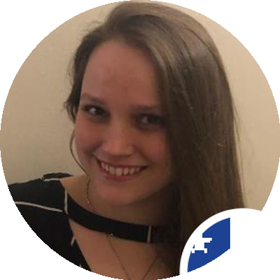
🇨🇱 Chile · Fundadora Sociedad Chilena de Dermatología Veterinaria. Especialista en dermatología, oncología y nutrición. Conferencista internacional.
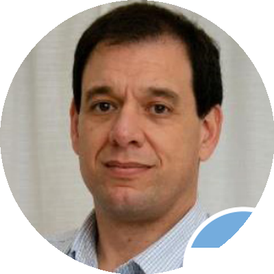
🇦🇷 Argentina · Profesor Facultad Cs. Veterinarias, UNLP. Autor de libros y capítulos de dermatología. +200 congresos internacionales.
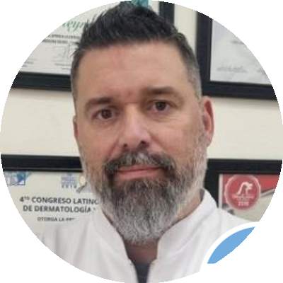
🇦🇷 Argentina · Especialista DLACVD. Docente posgrado UCASAL y USAL. Tutor de residencias latinoamericanas.
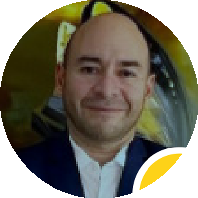
🇨🇴 Colombia · Miembro fundador ACDV. Interchip Miami Veterinary Dermatology. Autor artículos nacionales e internacionales.
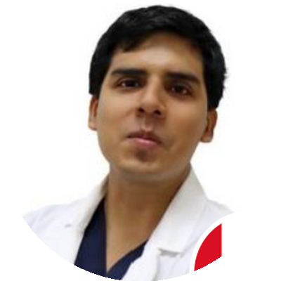
🇵🇪 Perú · Diplomate LACVD. Profesor U. Peruana Cayetano Heredia. Miembro Soc. Latinoam. y Europea de Dermatología Vet.
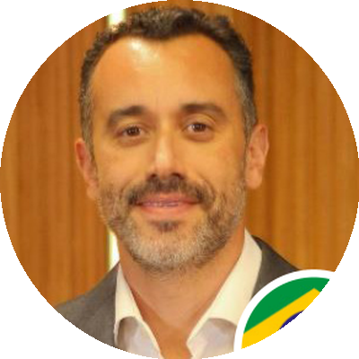
🇧🇷 Brasil · PhD en Cs. Veterinarias. Director científico Asoc. Brasileña de Endocrinología Vet. Docente UFRGS. Autor de capítulos internacionales.
🇧🇷 Brasil · PhD(c) UNESP Jaboticabal énfasis endocrinología. Docente visitante universidades de Brasil. Expositora nacional e internacional.
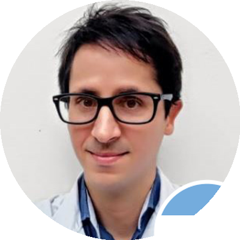
🇦🇷 Argentina · PhD (UBA). Investigador CONICET. Especialista SAEM. Miembro comisión directiva ESVE (Soc. Europea Endocrinología Vet.).
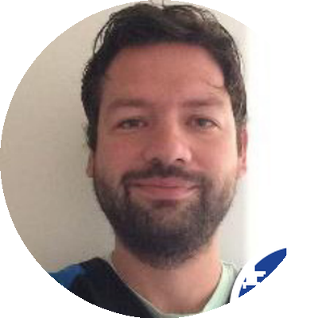
🇨🇱 Chile · PhD(c) énfasis diabetes. Profesor UNAB y U. de las Américas. Director Endocrivet. Investigador con publicaciones científicas.
🇦🇷 Argentina · Profesor USAL. Autor "Manual práctico de endocrinología clínica en el perro" (Multimédica 2024). Director CARE-V.
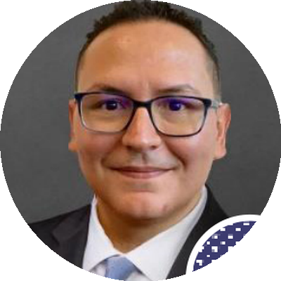
🇺🇸 EE.UU · Diplomado DACVECC. Residencia U. of Florida. Certificado hemodiálisis UC-Davis. Experto en nefrointensivismo veterinario.
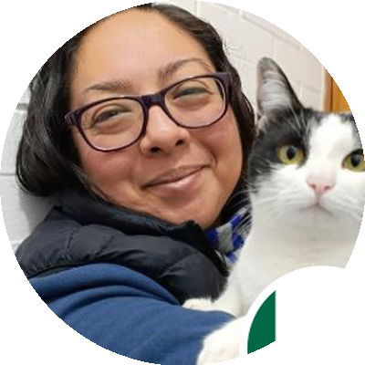
🇲🇽 México · Magíster Nutrición Clínica FMVZ-UNAM. +15 años asesorías nutricionales. Ponente internacional desde 2011.
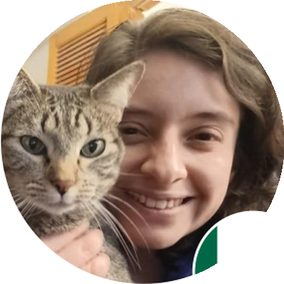
🇲🇽 México · 2x Magíster UNAM y Esneca. Fundadora AG Nutrición Clínica Vet. Equipo Royal Canin México. Ponente ACCOMEVET.
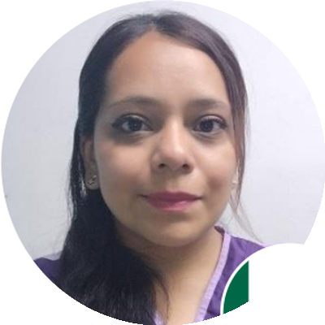
🇲🇽 México · PhD FMVZ-UNAM en microbiota y probióticos. Coautora manuales CEAMVET. Profesora FMVZ y UVM. Certificada CONCERVET.
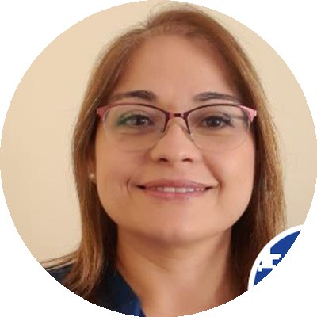
🇨🇱 Chile · Magíster Nutrición y Fisiología Animal PUC Chile. Ex profesora UNAB y U. O'Higgins. Conferencista internacional.
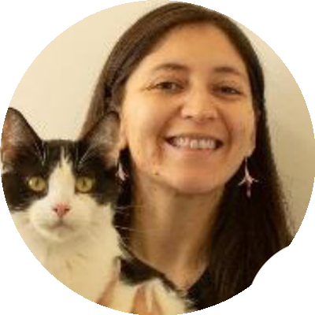
🇨🇱 Chile · Magíster Salud Animal U. Austral de Chile. Ex docente U. Mayor y U. Austral. Nutrición de pequeñas especies.
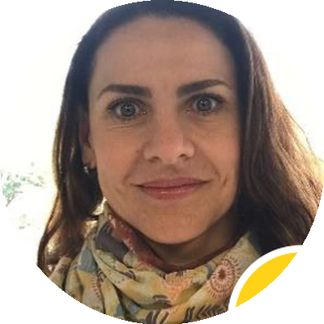
🇨🇴 Colombia · Magíster Nutrición U. Nacional de Colombia. Docente U. CES, U. de Antioquia y U. La Sallista. Especialista Colombia.
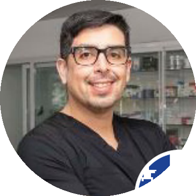
🇨🇱 Chile · Maestría Internacional Nutrición Animal (C.L.E.A España). Docente Diplomado intl. de Nutrición Clínica Animal UNAM.
🇨🇱 Chile · Posgrados en dermatología, nutrición y oncología. Fundadora Soc. Chilena de Dermatología Vet. Docente en tres áreas clínicas.
14 semanas · 23 módulos · 72+ clases
• Introducción a la dermatología: método POA
• Examen microscópico de pelos: técnica y sorpresas
• Teledermatología: ¿el futuro?
• Toma de muestras: tricograma y cultivo bacteriano
Ponentes: Dr. Zuriaga, Dr. Capitan, Dra. Bonati
• Diagnóstico de la alergia alimentaria
• Abordaje diagnóstico y terapéutico del prurito alérgico
• No todo el prurito es alérgico: otras patologías
• Reacciones adversas a alimentos vs expectativas
• Alergias felinas y dermatitis por déficit de zinc
Ponentes: Dr. Manzuc, Dr. Zuriaga, Dr. Capitan, Dr. Reynes
• Conceptos terapéuticos en dermatitis atópica
• Pénfigo foliáceo: de la fisiopatología a la clínica
• Enfermedades autoinmunes · Terapias tópicas
• Alopecias de origen genético
Ponentes: Dr. Manzuc, Dr. Reynes, Dr. Dueñas, Dr. Venturo
• Hipotiroidismo canino · Síndrome de Cushing
• Alopecias gonadales
• Patrón pustular y pioderma: resistencias microbianas
• Erosiones y úlceras cutáneas
Ponentes: Dr. Manzuc, Dr. Zuriaga
• Abordaje multimodal de otitis externas
• Otitis media felina
• Mecanismo de cicatrización de heridas
• Enfermedades oncológicas comunes · Linfoma cutáneo
Ponentes: Dr. Zuriaga, Dr. Capitan, Dr. Reynes, Dr. Venturo
• Obesidad en perros y gatos
• Introducción a las endocrinopatías
• Poliuria, polidipsia y diagnósticos diferenciales
Ponentes: Dr. Pöppl, Dra. Terrabuio
• Hipersomatotropismo felino
• Diabetes insípida central: abordaje PDPU
• Síndrome de Cushing felino
Ponente: Dr. Miceli
• Hipotiroidismo canino · Hipertiroidismo felino
• Hipercalcemia e hipocalcemia en gatos y perros
• Trastornos del metabolismo fósforo-calcio
Ponentes: Dr. Miceli, Dra. Terrabuio
• Ciclo estral, piómetra y diabetes insulinorresistente
• Diabetes mellitus canina y felina
• Síndrome de Addison en gatos y perros
• Manejo medicamentoso del Cushing canino
Ponentes: Dr. Pöppl, Dr. González, Dr. Teyssandier, Dra. Terrabuio
• Manejo de la crisis Addisoniana
• Manejo de la cetoacidosis diabética
• Hipoglucemias: abordaje, diagnóstico y tratamiento
Ponentes: Dr. Londoño, Dra. Terrabuio
• Introducción a la nutrición de perros y gatos
• Tendencias en alimentación: cómo guiar a los tutores
• Cómo manejar la ansiedad desde la nutrición
• Análisis e interpretación de alimentos para mascotas
• Fisiología digestiva en gatos · Nutriendo el microbioma
Ponentes: Dra. Rivera, Dra. Guerrero, Dra. Márquez, Dra. Pinilla, Dra. Cadavid
• Requerimientos calóricos en animales de compañía
• Requerimientos específicos en gatos
• Funciones y consideraciones de vitaminas
• Sobrepeso/obesidad · Manejo nutricional obesidad felina
Ponentes: Dra. Rivera, Dra. Cosío, Dr. Rodríguez, Dra. Guerrero, Dra. Pinilla
• Manejo gastrointestinal · Enteropatías crónicas
• Nutrición en perros y gatos diabéticos
• Manejo nutricional en pancreatitis
• Soporte en gatos con FLUTD, CIF y síndrome de Pandora
• Manejo en enfermedad renal crónica
Ponentes: Dra. Cosío, Dra. Márquez, Dr. Rodríguez, Dra. Rivera
• Nutrición en el paciente neurológico
• Nutrición paliativa y terapéutica en oncología
• Nutrición en el paciente geronte
• Nutrición de neonatos desde el vientre
• Nutrición en hospitalización y paciente crítico
Ponentes: Dra. Cosío, Dra. Bonati, Dra. Cadavid
Lo que obtienes
Firmado por la Dra. Theresa Fossum y avalado por los 5 patrocinadores. Respaldado por instituciones de 3 continentes.
3 meses de clases + 5 meses adicionales de regalo para repasar todo el material, ponerte al día si vas atrasado y revisitar casos clínicos cuando los necesites.
Cada clase en vivo queda grabada y disponible al día siguiente en la plataforma Moodle. Estúdialas a la hora y en el lugar que prefieras.
Las clases en vivo son con preguntas abiertas. Resuelves tus dudas con el mismo especialista que escribió el paper sobre el tema.
Las clases del Dr. Rares Capitan (Rumania) cuentan con un traductor médico profesional al español. Sin barreras de idioma.
Documentos de estudio, guías descargables, bibliografía actualizada y soporte técnico continuo en la plataforma Moodle.
Inversión · Precios 2026
Calidad académica internacional a un costo diseñado para que ningún veterinario que quiera crecer se quede sin acceso.
Precio pleno desde el 15 de junio 2026. Descuento disponible por tiempo limitado.
Para estudiantes activos de Medicina Veterinaria en Colombia.
Inscribirme (Estudiante COL)Para profesionales de todos los países fuera de Colombia. Pago por PayPal, Zelle, MoneyGram o Western Union.
Inscribirme (Profesional INTL)Para estudiantes activos de Medicina Veterinaria fuera de Colombia.
Inscribirme (Estudiante INTL)Medios de pago aceptados
El diplomado abre con un mínimo de 100 inscritos. Reserva tu cupo con anticipación.
Preguntas frecuentes
El diplomado inicia el 27 de julio de 2026 y finaliza el 18 de octubre de 2026. Al finalizar recibirás 5 meses adicionales de acceso a la plataforma para repasar el material, totalizando 8 meses de acceso.
Ambas. Las clases se imparten en vivo (generalmente en horas de la noche) para que puedas hacer preguntas directamente a los ponentes. Al día siguiente todas las clases quedan grabadas y disponibles en la plataforma Moodle para que las veas cuando quieras durante los 8 meses.
Recibirás un certificado de asistencia y aprobación firmado por la Dra. Theresa Fossum (Dr. Fossum's Pet Care, EE. UU.) y avalado por los 5 patrocinadores internacionales: Hosp. Vet. Zaragoza (España), UNAB (Chile), SLEV y SOCHIEPA.
Sí. El diplomado está diseñado para Latinoamérica. Tenemos precios específicos para profesionales y estudiantes tanto de Colombia como del extranjero. Los pagos internacionales se aceptan vía PayPal, Zelle, MoneyGram o Western Union.
Sí. Las clases del Dr. Rares Capitan (Rumania) contarán con un traductor médico profesional al español en tiempo real. No habrá barreras de idioma.
Debes completar tu inscripción y pago antes del 15 de junio de 2026 para acceder al precio con descuento. Después de esa fecha el precio será $950.000 COP para profesionales colombianos (precio pleno sin descuento).
El diplomado abre con un mínimo de 100 inscritos. Te recomendamos asegurar tu cupo lo antes posible para garantizar que se alcance el quórum.
¿Tienes otra pregunta? Contáctanos directamente:

27 de julio al 18 de octubre de 2026 · 100% online · 20 ponentes internacionales · 8 meses de acceso. Inscríbete ahora antes del 15 de junio y accede al precio con descuento.
f.geducationalsociety@gmail.com · +57 315 161 6104